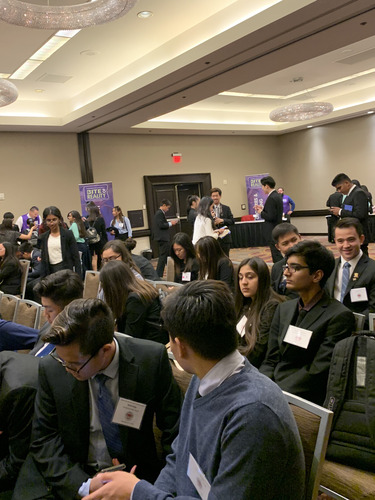
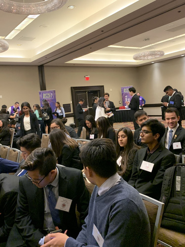
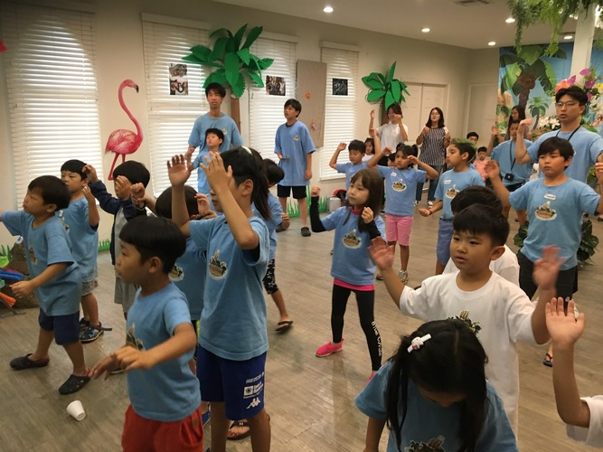
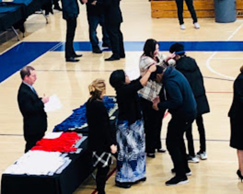
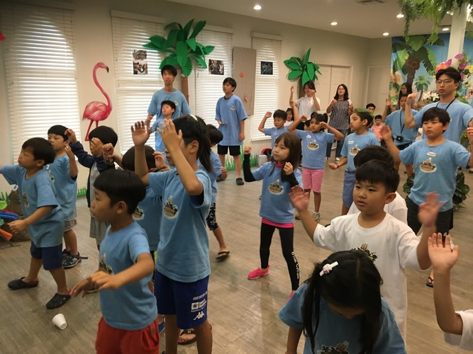
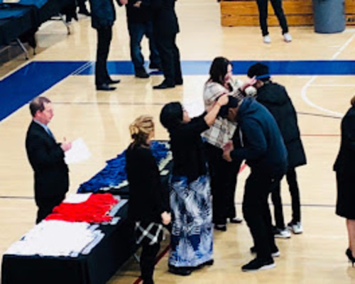

Junjae Shin
Driven freshman in Business who seeks real-world experience in the field of study. Offers strong interpersonal and task prioritization skills. Skilled in organization and teamwork, through volunteer work and created a self-started business. Proven leadership experience through managing clubs and work history.
During high school, my counselor suggested that I try a new program on campus, called Virtual Enterprise. Initially I was hesitant in adding this to my schedule because I would be the only underclassman in the class. But surprisingly, the advising teacher reached out to me first and asked me to join the class, giving me the opportunity to freely learn about what I always wanted to pursue- business.
The crux of the class was the creation of a virtual business that would compete with other schools. I was named the Chief Financial Officer in our class and we quickly devised an entrepreneurial idea to pitch into a business. Our idea was a vending machine filled with medical products that would be placed in schools and other public places because research showed that people were in need of these products here.
By attending trade meetings and competing in business pitches I recognized that the world I stepped in was way different from what I thought. Having creative ideas is equally important as having good speaking skills or being smart with money. When I learned that human behavior drives consumption, instead of models and graphs, I began to wonder “What happens to the business world when there are no emotions?”
As I explored being part of the business world throughout sophomore year, I met people who had the same skills and mindsets as me. By grappling with our everyday problems and trying to create a product that will satisfy that need, I grew both intellectually and as a person. This educational experience has greatly expanded my learning horizons- going above my teacher’s expectations and engaging with business on my own helped me shape my future plans more clearly. In the same way, this opportunity also helped me know more about people, because innovation happens when we know what is best in need- a mindset I intend on bringing to college.
Experience
Volunteer
• Leader of the youth group, created organizational procedures and led weekly discussions within the group increasing attendance.
• Conferred with representatives of local government to meet community needs and create events such as Thanksgiving Festival which resulted in food drives and scholarships.
• Organized and managed a group of 20 students for summer camp every year and went to Mexico for outreach, taught basic English to local children in rural areas.
Translator
• Translated documents in English and Korean, and managed 5-10 documents a week, by creating a work schedule.
• Reviewing and editing final papers to spot and correct errors in punctuation, grammar and translation, led to maintaining message content, and clearer delivery.
• Created business plans and annual reports to track profits and budget weekly/monthly expenses, helped build up a savings account.
Foreign Language Teacher
• Led 5-10 primary school students to teach Korean, and designed task-oriented activities as well homework to facilitate better language acquisition.
• Reviewed and graded student's language projects
• Created educational content to help promote student education
• Made weekly quizzes to check student’s progress, and provided written and oral feedback to parents on students' progress.
Education
UC Riverside
Portfolio
 



 